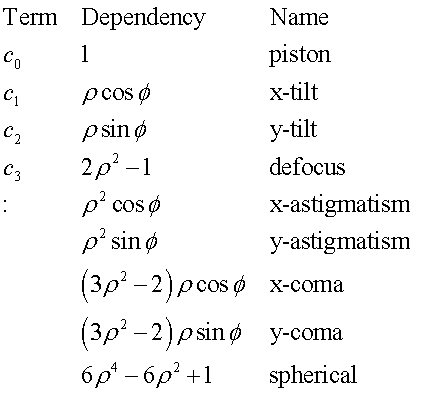

Creates a surface specified by an explicit Zernike polynomial.
Syntax
ZERNIKE X x c c' c" ... [aperture ]
Y y
Z z
| Option | Description |
|---|
| X, Y, or Z | specifies axis of symmetry |
| x, y, or z | location along axis of symmetry |
| c c' c" c'" ... | University of Arizona FRINGE Zernike coefficients |
| aperture | ELLIPSE, RECTANGLE, or HEXAGONAL |
Reference Point
At intersection of the surface and coordinate axis.
Surface Normal
Along negative coordinate axis.
Remarks
- Creates an explicit surface by transforming
the University of Arizona FRINGE Zernike coefficient set c c' ...
to a polynomial.
- The second entry designates the axis of
symmetry (either X, Y, or Z) for the surface.
- The zeroth coefficient c is the constant term (piston). The 36th or last coefficient is the
12th-order radial term (spherical). The first nine terms are related to the
classical third-order optical aberrations:

- ρ is the distance from the coordinate axis.
- It may be necessary to SCALE the
surface to its proper dimensions, since these coefficients are usually defined
relative to a unit circle area. The SCALE command automatically scales the
physical dimension of the surface.
- If the sag of the surface is to remain
constant over the new physical dimension, then one of the SCALE parameters
must be 1. For example, to SCALE by a factor of 2 in the X and Y dimensions while maintaining the same sag as over the unit circle, use SCALE 2 2 1.
-
This surface can extend to infinity unless a LOCAL command follows, or a trailing
aperture option of the following form is specified:
ELLIPSE a [ a' [ o [ s [ s' ] ] ] ]
RECTANGLE
HEXAGONAL a [ o [ s [ s' ] ] ]
- a a' are the heights in
the other two transverse directions.
- For the HEXAGONAL form, a is the center-to-vertex distance (maximum height).
- o is an optional central
hole ratio.
- s s' are the transverse
coordinates of the center of the aperture.
ZERNIKE Examples